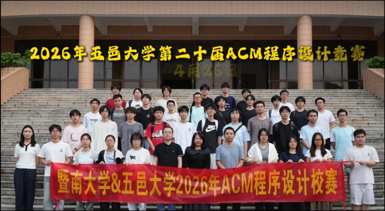

/ 01 — 2024.09 — 2025.04
基于编码器-解码器的深度模型水印信息嵌入与提取方案
面向 DNN 模型知识产权保护，研究频域黑盒水印技术。设计基于 UNet 的对称编解码器与 PatchGAN 双判别器对抗训练，个人负责解码器、提取网络与损失函数设计。
水印提取成功率 98%+，结构相似性 > 0.95；以第二作者发表于《机电工程技术》。
以算法为笔，以代码为墨。深耕计算机视觉与大模型应用，在科研探索与学科竞赛中，持续追寻技术与实践的交汇点。
我始终相信，真正的学习发生在把想法变成现实的过程中——从一行代码，到一个能跑起来的系统。
大一起投身科研，历经三级大创项目打磨；以第一作者发表 EI 会议论文，累计斩获多项国省奖项。如今，我期待在人工智能与边缘计算的交叉领域继续深耕。
我是陈晋钦，五邑大学电子与信息工程学院计算机科学与技术专业学生，已推免至深圳大学攻读计算机技术硕士。我的研究兴趣聚焦于计算机视觉、深度学习与大模型应用。
科研上，我从大一起参与国家级、省级、校级三级大学生创新创业训练计划，在项目中历练从数据处理到模型部署的全流程能力；已以第二作者发表期刊论文、以第一作者发表 EI 检索会议论文。竞赛上，累计获得国家级奖项 5 项、省级奖项 9 项，涵盖程序设计、数学建模与电子设计。
此外，我担任过院级学生组织负责人与 ACM 协会会长，志愿服务时长超过 300 小时，相信技术之外，责任与协作同样重要。
从模型水印、嵌入式视觉到大模型智能体，在真实课题中锤炼工程落地能力。
面向 DNN 模型知识产权保护，研究频域黑盒水印技术。设计基于 UNet 的对称编解码器与 PatchGAN 双判别器对抗训练，个人负责解码器、提取网络与损失函数设计。
负责瞄准模块视觉系统：模型量化后部署 YOLO 检测靶纸外框，结合 OpenCV 透视变换解算靶心坐标，设计 UART 协议驱动二维云台完成实时打靶。
面向个性化模拟面试，构建文档驱动向量知识库（975 块 / 170 篇），将 RAG 接入出题与评分环节，设计 4 个 LLM Agent 并用 LangGraph 状态图编排。
系统梳理粤闽地区侨批档案数字化现状，覆盖数据采集、存储、内容分析与活化利用全流程，总结行业标准不统一等痛点并提出管理建议。
以赛促学，在程序设计、数学建模与电子设计等竞赛中屡获佳绩。
在竞赛、实践与志愿服务中留下的身影，记录技术之外的成长。
